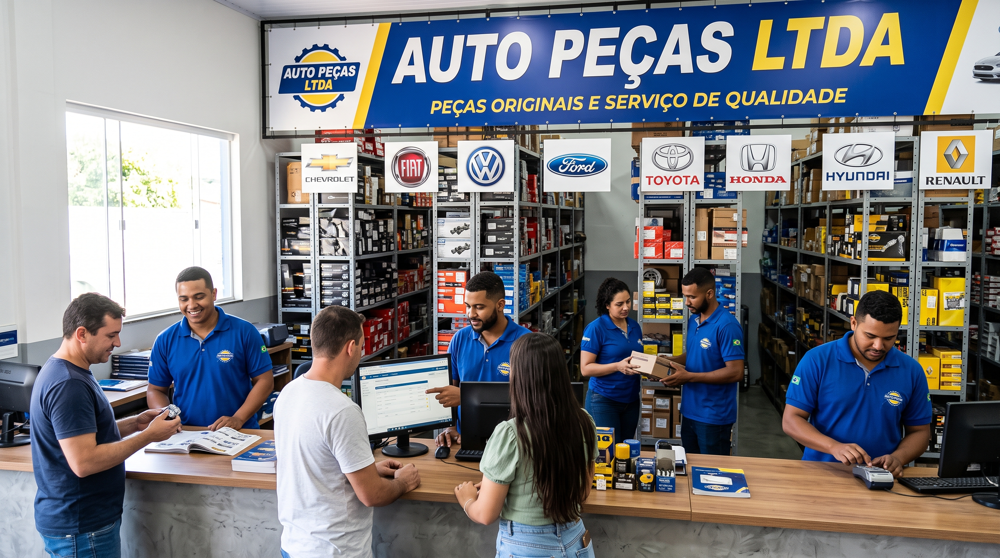

Links: Início | Quem Somos | Contato
Mais de 20 anos de tradição, inovação e confiança no mercado automotivo.
A Auto Peças LTDA nasceu há duas décadas com o compromisso de oferecer soluções eficientes e de alta qualidade para o setor de reposição automotiva. Ao longo dessa trajetória de 20 anos, construímos uma história sólida, pautada na transparência, na busca constante por inovação e no respeito total aos nossos clientes e parceiros.
O que começou como um projeto focado no atendimento local hoje se consolida como uma empresa referência na distribuição de peças para veículos nacionais e importados. Nossa estrutura moderna e nosso estoque diversificado nos permitem atender desde o motorista apaixonado pelo seu carro até grandes oficinas mecânicas e frotistas.
Garantir que cada cliente encontre a peça certa com agilidade, preço justo e a certeza de estar adquirindo um produto original e seguro para o seu veículo.
Fornecer componentes automotivos de alta qualidade, acompanhados por um atendimento técnico especializado e eficiente, contribuindo para a segurança e a alta performance dos veículos de nossos clientes.
Ser reconhecida como a principal e mais confiável referência no mercado de auto peças da região, expandindo nossa atuação e liderando pela excelência no atendimento e na inovação logística.
Rua dos Alfares, 120 - Bairro: Lajota - Recife - PE
CEP: 50.901-101 | CNPJ: 41.463.935/0001-91
Telefone: (70) 3124-90120
E-mail: autopecasltda@aply.co.br